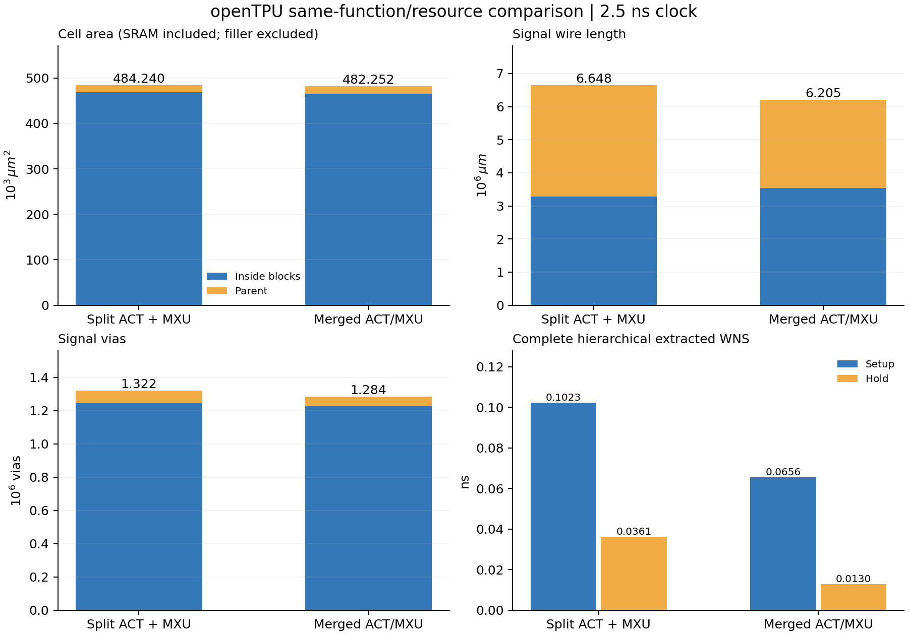
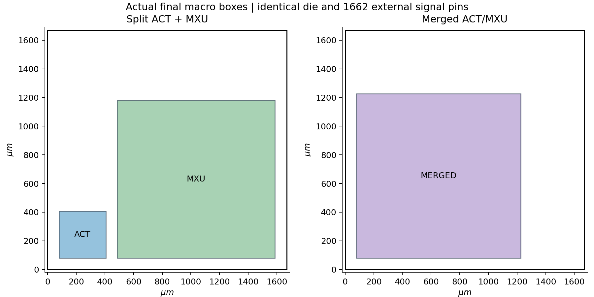
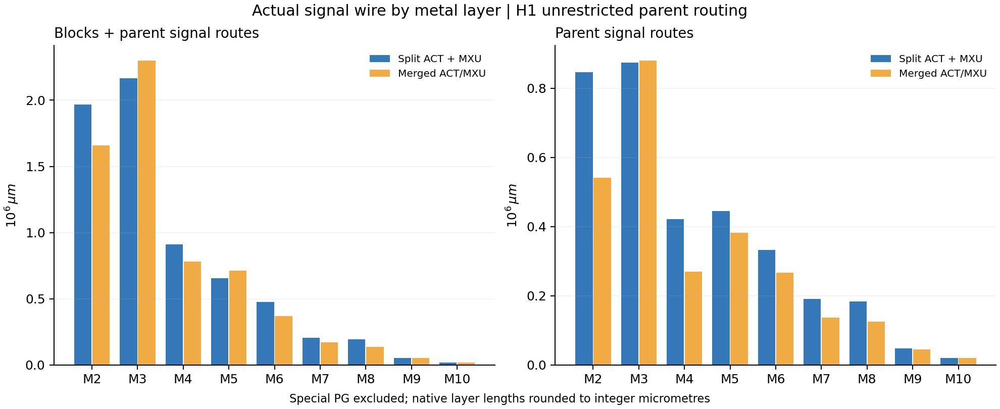

Issue #15 · Nangate45 typical · H1 工程实验 · 冻结提取结果
openTPU ACT/MXU 同功能、同资源的拆分与合并物理对照
在本次固定版图和统一预算下，拆分相对合并的合计叶单元面积变化为 +0.41%，总信号线长变化为 +7.14%，总信号通孔变化为 +2.97%。两组实际完整路径均满足 2.5ns 时钟和 0.5ns IO 预算。
本轮完成三种块内实现及两种父层布线，持续修复真实提取后的电气、setup、hold 和几何违例。只从全部通过资格门槛的终态生成本页；失败过程和调整依据见实验记录。
对照条件
同一 openTPU 源 f237dab2f196855a59a083b1454786df8f01291f，small 参数 D32、MCOLS2、ROWS2、ACT_BLOCKS32、LANES4、DEPTH64、IMPL2、CL16、E0、SID0。合并直接连接并展开同一对已映射网表，关闭额外逻辑优化。初始 169109 个映射单元、37023 个 DFF、12 个 synthetic SRAM；非支持逻辑、状态及 SRAM 库存与功能锥证书通过。
40 个外部端口、1662bit，2.5ns 时钟、0.5ns 输入输出预算、BUF_X4/Z 输入驱动、5fF 输出负载、50ps 时钟转换。拆分暴露 684bit 地址数据与 1bit computing 反馈，无新增流水、缓存或串行化。两组父层同为 1670×1670µm，实际外部引脚逐 bit 几何一致；ACT 位于 (80,80)、MXU 位于 (486.205,80)，合并位于 (80,80)，方向 R0。
块内保留 M1–M9，详细 LEF 无 M10；父层信号可用 M2–M10，PG 使用 M1/M4/M7/M10，保留详细宏障碍并核对最终 VDD/VSS 连通。物理缓冲、驱动升级、时钟树等允许变化，全部计入面积与布线成本。
最终拆分候选从封存源做驱动规格修复；原生合法化后实际有 1 个单元改变规格或位置，清除其关联的 2 条普通信号线路，向详细路由器保留 11952 条既有线路。这是详细路由的初始条件，路由器仍可修复任何网络；不宣称最终线路完全冻结。随后重新提取并执行同一套完整验收。
完整系统结果
叶单元面积含同一批 SRAM 和非填充支持单元。硬宏占地、父层 die 单独列示，不再叠加到宏内叶面积。信号线与通孔排除 special PG；父层包含外部 IO、时钟及块间连接，不能全算作 685bit ACT/MXU 边界互连。WNS 来自真实父层与子块网表、分层 SPEF 的完整路径分析，不能相加各块 WNS。
拆分相对合并，块内信号线变化 -249,953µm，父层变化 +693,092µm，两部分合计变化 +443,139µm。划分收益须连同父层接入和修复开销一起判断。

块内与父层成本分开计量；完整 setup 与 hold 均为实际提取结果。

从最终数据库 PG 几何审计读取宏盒形；外框和 1662bit 外部引脚相同。
完整真实路径的最差起点与终点
直接读取每组完整分层 STA 的第一条 max／min 路径，并与同一份 WNS 核对。时序还受块内逻辑、时钟插入延迟和外部 IO 预算影响，不能把两组 WNS 差值单独归因于 ACT/MXU 边界，也不由此推算实际最高工作频率。
块内结果与接口代价
块内单独的面积或线长不能代表整机成本：拆分后还需为跨块接口、外部 IO 与时钟完成父层布线及驱动修复。冻结 ACT 输出的内部既有负载会占用电容预算，例如 r_data[471] 内部负载 26.4487fF、驱动上限 60.654fF，留给外部线与接收端约 34.2053fF。父层长线可能使冻结块内部驱动真实过载；本轮通过边界缓冲隔离并重新完整提取验收。
物理支持单元分类与面积
使用原生工具分类。buffer 类可能包含 CTS 等缓冲；缺少独立 clock_buffer 类不代表没有时钟树。所有非填充支持单元均计入总面积，不能将这些类别再与总面积相加。
金属层使用与预制底座含义

原生详细布线逐层表；四舍五入到整数 µm，总长与 JSON 指标交叉核对。
本次父层 M10 以下的信号线占比：拆分 99.39%，合并 99.26%。这是本次允许全父层路由的实际资源使用，不能据此证明其他受限定制层方案可行或不可行。
面向少量掩模定制，下一步须在底座冻结前同时定义边界驱动能力、块内既有负载、允许的外部电容和转换时间、预制缓冲、时钟分配及插入延迟／偏斜预算、接入层与预制垂直通孔及轨道资源，并在指定定制层集合内重新实现。当前 H1 仍依赖新增有源单元，尚未实现 H2 的冻结资源和少量定制层约束。
逐层线长明细
验收与证据
全部选定来源同时通过 DRC、天线、setup/hold 及 TNS、电容/转换/fanout 计数和有符号余量门槛。父层另通过最终原生 PG、实际引脚一致性、完整真实分层 STA。三块及两父层功能证书、精确非支持资源库存、双子块边界 RC 自检、实际原生标注覆盖审计齐备；双子块自检另以漏父层 RC 负例确认检查敏感性。
选定作业、实际 runner 与封存清单
实际计算节点镜像与工具身份
工具 ELF 以 SHA256 确定；OpenROAD 版本字符串为 unknown，不将官方 master 当作本机精确源码。Yosys 报告 0.68+post，git 版本未知；STA 为嵌入式。所有新 Slurm 作业实际 UNLIMITED，不设完成期限或耗时取消策略。
证明和 STA 实际读取的网表、SPEF、SDC 摘要与对应源封存输出绑定；首次终态清单摘要保持不变，共享输入摘要一致。原始物理数据库与日志保存在获授权集群 /public/home/yuzelu/project-circuit/LLMHardwareDesign/issue-15/，仓库保留轻量回执、脚本和索引。
完整最终 ODB 的独立线长复核
独立原生 report_wire_length 读取完整最终 ODB，核对保留线路也被计入。两种原生统计的实际差异均保留，1% 阈值只拦截明显成本漏计；主表始终使用统一 DRT 口径。该成本复核不改变零违例的物理、电气或时序门槛。
适用范围
这是一个 small 参数、单 typical 角点、固定宏位置和外部引脚的工程对照，未做多布局、多种子或多工艺角点搜索，差值不能推广为普遍最优结论。synthetic SRAM 没有真实 GDS；上游 RTL 通用形式等价、生产签核与制造版 GDS 未完成。层次 STA 工具仍提示实验功能；共同 SDC 对 clk 的 input delay 被原生忽略，数据预算与时钟约束一致，未为消除提示修改某组约束。